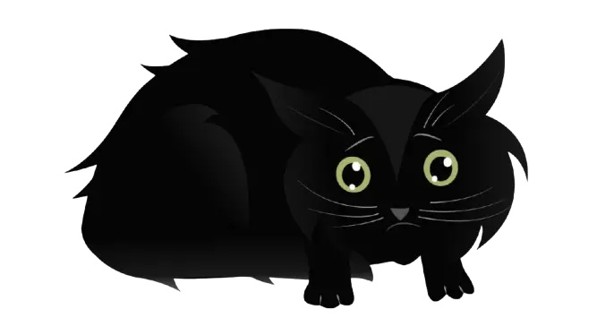

<!DOCTYPE html>
<html lang="en">

<head>
  <meta charset="UTF-8">
  <meta name="viewport" content="width=device-width, initial-scale=1.0">
  <meta name="description" content="Save the Cat">
  <link rel="stylesheet" href="./public/css/normalize.css">
  <link rel="stylesheet" href="./public/css/tailwind.css">

  <link rel="icon" href="./favicon.ico" sizes="any">
  <link rel="icon" href="./public/favicon/icon.svg" type="image/svg+xml">
  <link rel="apple-touch-icon" href="./public/favicon/apple-touch-icon-180x180.png">
  <link rel="manifest" href="./manifest.webmanifest">

  <title>Save the Cat</title>
</head>

<script type="module" src="./public/js/index.js"></script>
<svg xmlns="http://www.w3.org/2000/svg" style="display: none;">
  <symbol id="icon-home" viewBox="0 0 1510.15 1279.17">
    <path xmlns="http://www.w3.org/2000/svg" fill="currentColor"
      d="M916.29,1455.79c-161.78,12-301.35-101.8-393.52-224.28-31.92-25.19-68.93,31.79-114.23,20.36-147.66-21.25-126.9-29.94-155.92,112.82-108.27,70.48-127-318.13-91.09-378.43,72-187.53,151.35-44,244.56,20.7,65.07-57.18-194.42-220.57-31.49-562.87,149-337.49,680.54-171,640.76,185.08,10,94.65-51,209.26,3.56,292.83,87.13,11.48,128.28-210.64,226.47-122.09,77.72,160.64,65.55,222,233,331.22,31.68,44.51-39.27,76.4-73.54,87.43-85.22,31.19-167.52-35.33-251.44-26.39-71.33,7.06-51.7,63.2,3.44,79.31,89.29,37.94,226.12-37.19,274.72,78.89,24.31,93.14,116,90.47,193.47,95.92,65,21.76,11,89.36-36.68,88.93-173.29,35.71-296.93-160.81-466.31-121.83C1054.81,1432.05,985.29,1451.79,916.29,1455.79ZM629.08,766.5C598.49,602.74,527.24,800.59,578,862,626.49,906.52,637,791.29,629.08,766.5ZM433.27,585.15c27.59,204.68,168-103.84,50.23-123.79C440.58,480.5,433,543.76,433.27,585.15ZM662.93,519.6c-4.46,40,13.55,173.48,73.91,126.58C794.65,577.12,694.44,328.89,662.93,519.6Z"
      transform="translate(-144.92 -260.42)" />
  </symbol>
  <symbol id="icon-user" viewBox="0 0 24 24">
    <path
      d="M12 12c2.21 0 4-1.79 4-4s-1.79-4-4-4-4 1.79-4 4 1.79 4 4 4zm0 2c-2.67 0-8 1.34-8 4v2h16v-2c0-2.66-5.33-4-8-4z" />
  </symbol>
</svg>

<body class="text-xs leading-none font-georgia sm:text-lg lg:text-base 2xl:text-xl text-custom-text">
  <div class="relative flex flex-col justify-between min-h-screen">
    <!--bg-center bg-[url('../../public/img/background.jpg')] -->
    <main class="relative py-4 sm:py-6 md:py-8 lg:py-12 xl:py-16 grow items-center justify-center flex ">
      <div class="absolute inset-0 h-full">
        <div class="relative backround-sky text-custom-text overflow-x-hidden bg-custom-text flex items-end h-full">
          <ul class="houses relative flex h-1/2">
            <li class="house ">
            </li>
            <li class="house ">
            </li>
            <li class="house ">
            </li>
            <li class="house ">
            </li>
            <li class="house ">
            </li>
          </ul>
        </div>
      </div>
      <div class="relative  z-10 container container-custom  w-auto overflow-x-auto">
        <!-- <h1 class="mb-6 text-xl select-none sm:text-2xl 2xl:text-4xl">Save the Cat</h1> -->
        <ul
          class="container text-xs inline-grid gap-1 bg-opacity-50 justify-center p-3 bg-custom-text w-auto align-center "
          data-container>
        </ul>
      </div>
    </main>
    <footer class="relative py-4 text-sm  lg:py-8 md:text-base xl:text-xl">
      <div class="absolute inset-0 grid grid-rows-[1rem_1fr]">
        <div class="bg-custom-accent">
        </div>
        <div class="bg-custom-secondaryBackground paving flex justify-center items-center">
        </div>
      </div>
      <div class="container container-custom  relative z-10 flex flex-row items-end justify-center gap-5 ">
        <!-- <video class="w-52 block" height="252" width="320" autoplay loop muted>
          <source src="./public/video/cat_hides.mp4" type="video/mp4">
        </video> -->
        
      </div>
      <div class="container relative z-10 container-custom  flex flex-row items-end justify-center gap-5 ">

        <a class="w-7 h-7 custom-hover extend-click" href="https://rs.school/courses/javascript-preschool-ru"
          target="_blank">
          <svg class=" footer-svg" xmlns="http://www.w3.org/2000/svg" fill="none" viewBox="0 0 64 64">
            <g clip-path="url(#a)">
              <circle cx="32" cy="32" r="32" fill="currentColor" />
              <path class="fill-custom-secondaryBackground" fill-rule="evenodd"
                d="M13 21.51V42.5l6.307-.038v-8.515c.75 0 1.455.03 2.098.48.49.452.879 1.007 1.141 1.627l3.374 6.408H33c-1.404-2.795-2.53-6.33-4.945-8.452a6.3 6.3 0 0 0-1.644-.769 7.9 7.9 0 0 0 2.22-.833c1.755-1.07 2.76-3.027 2.713-5.07a5.9 5.9 0 0 0-.945-3.394c-1.473-2.256-4.465-2.523-6.933-2.434zm8.994 8.502H19.33v-4.314h2.773c1.377-.139 3.077.477 2.982 2.106.064 1.758-1.721 2.109-3.092 2.208"
                clip-rule="evenodd" />
              <path class="fill-custom-secondaryBackground"
                d="M39.477 35.089 33 35.467c.126 1.9 1.002 3.693 2.464 5.042q2.172 1.985 7.788 1.985c3.104.088 6.654-.68 8.569-3.337A6.08 6.08 0 0 0 53 35.564c.022-2.38-1.566-4.334-3.696-5.25A29.7 29.7 0 0 0 42.92 28.5a5.8 5.8 0 0 1-2.278-.743c-.738-.497-.564-1.53.093-1.997 1.873-1.24 4.895-.206 5.126 2.143l6.424-.34c-.115-1.795-1.1-3.508-2.65-4.605a11.9 11.9 0 0 0-6.436-1.437 15.1 15.1 0 0 0-5.43.792c-2.16.8-3.94 2.751-3.935 5.14-.04 1.485.682 2.956 1.921 3.91a15.6 15.6 0 0 0 6.384 2.435 9 9 0 0 1 3.483 1.218c.966.715.959 2.151-.026 2.874-1.088.763-2.693.852-3.914.357-1.31-.531-2.077-1.769-2.205-3.158" />
            </g>
            <defs>
              <clipPath id="a">
                <path fill="#fff" d="M0 0h64v64H0z" />
              </clipPath>
            </defs>
          </svg>
        </a>
        <span class="select-none">2024</span>
        <a class="w-7 h-7 custom-hover extend-click" href="https://github.com/anastanei" target="_blank">
          <svg class="w-full h-full footer-svg" fill="currentColor" xmlns="http://www.w3.org/2000/svg"
            viewBox="0 0 24 24">
            <path
              d="M12 0C5.37 0 0 5.37 0 12a12 12 0 008.21 11.43c.6.11.82-.26.82-.58 0-.28-.01-1.02-.02-2.01-3.34.73-4.04-1.61-4.04-1.61-.55-1.4-1.35-1.77-1.35-1.77-1.1-.75.08-.73.08-.73 1.22.09 1.86 1.26 1.86 1.26 1.08 1.86 2.83 1.32 3.52 1 .11-.79.42-1.32.76-1.63-2.67-.3-5.47-1.33-5.47-5.93 0-1.31.47-2.38 1.24-3.22-.12-.3-.54-1.52.12-3.17 0 0 1.01-.32 3.3 1.23a11.45 11.45 0 013.01-.4 11.5 11.5 0 013.01.4c2.28-1.55 3.3-1.23 3.3-1.23.66 1.65.24 2.87.12 3.17.77.84 1.24 1.91 1.24 3.22 0 4.61-2.8 5.63-5.47 5.93.43.37.81 1.1.81 2.21 0 1.6-.02 2.88-.02 3.27 0 .32.22.7.83.58A12 12 0 0024 12c0-6.63-5.37-12-12-12z" />
          </svg>
        </a>
      </div>
    </footer>
  </div>
</body>

</html>